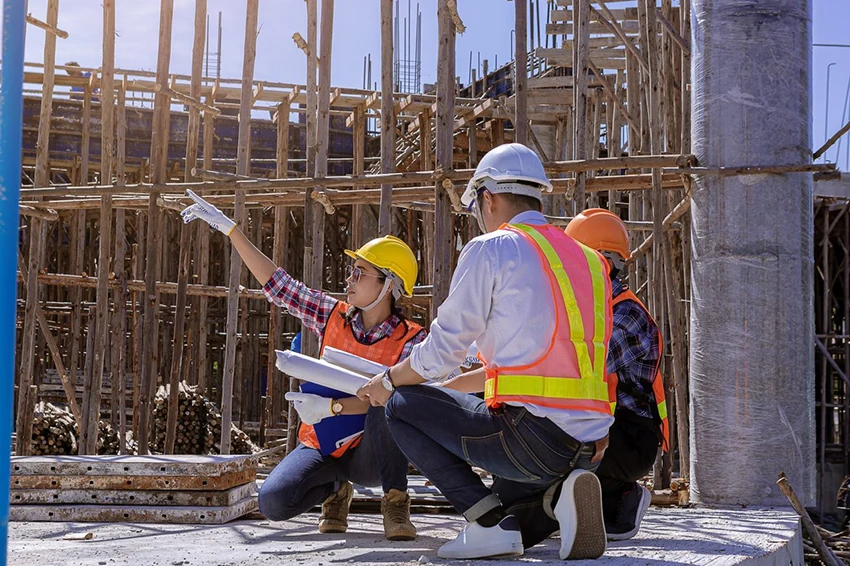
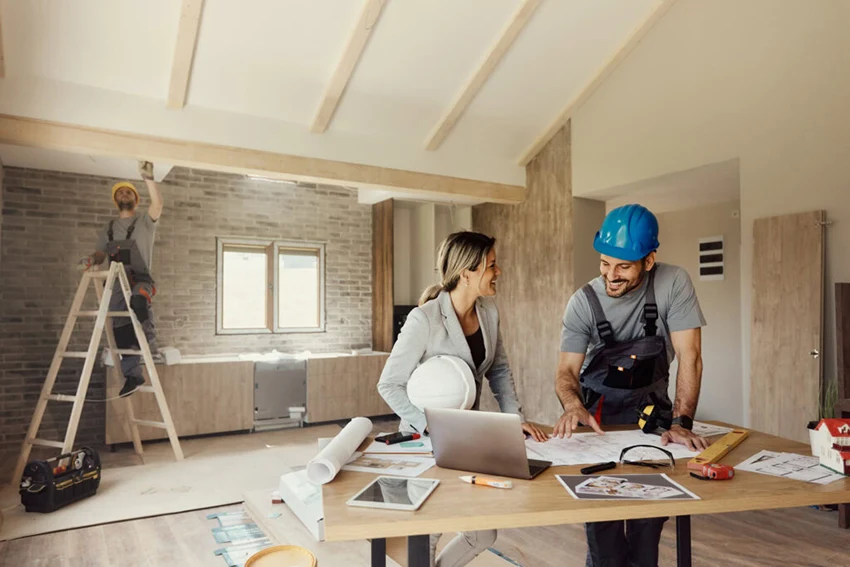
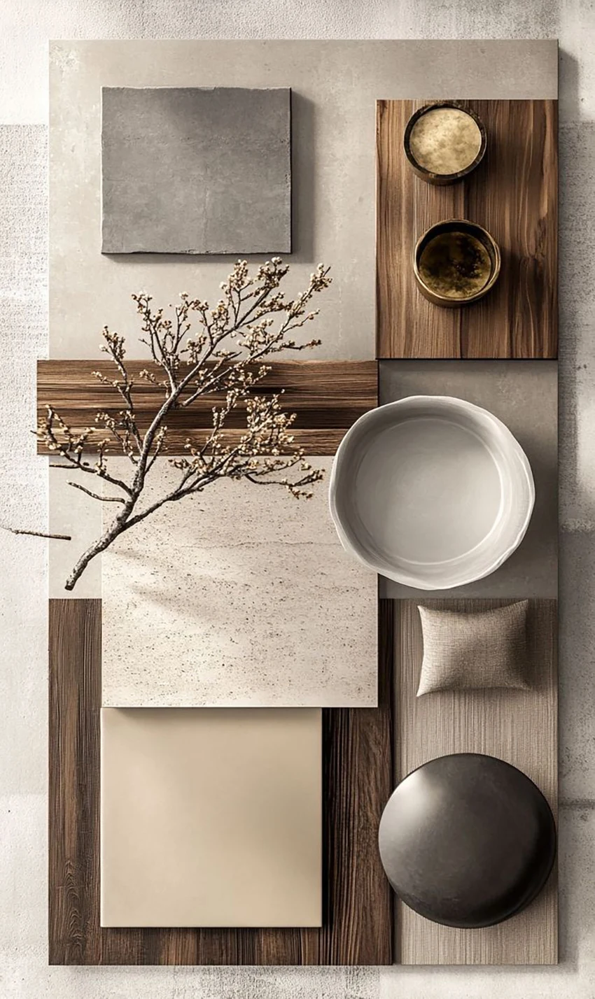
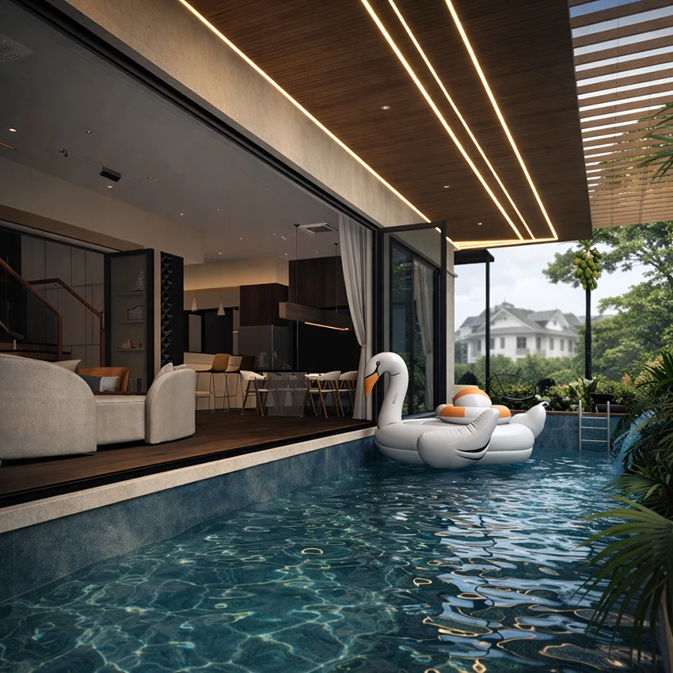
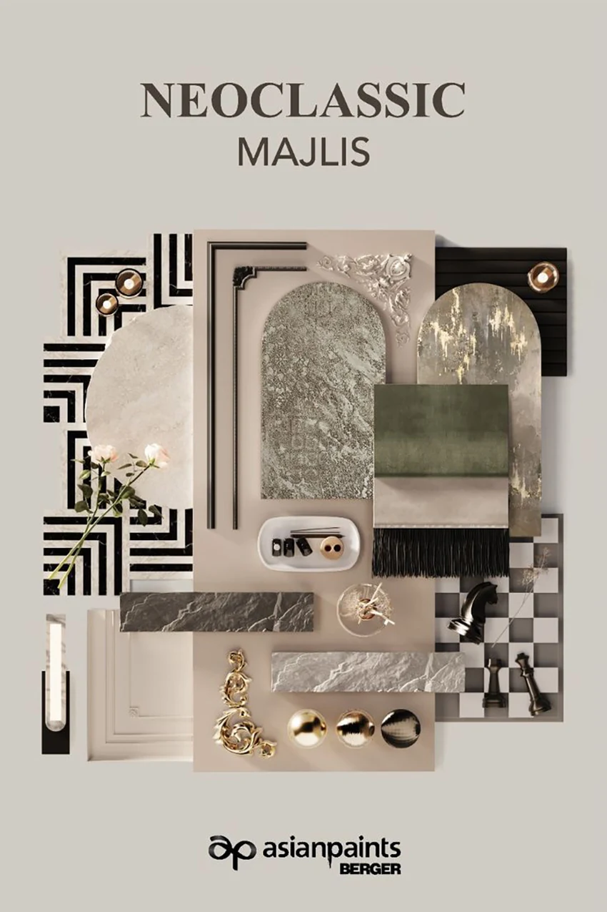
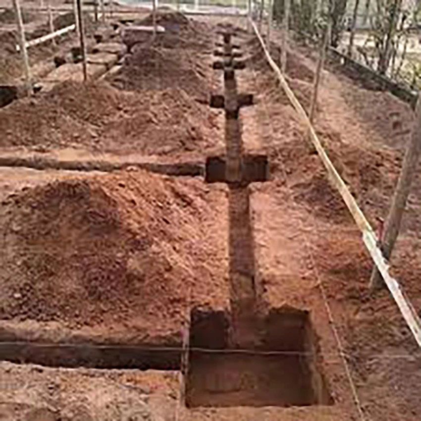
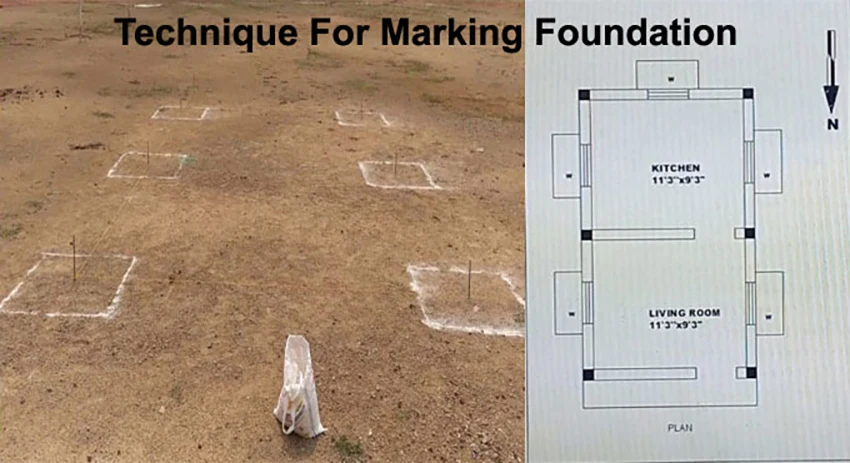
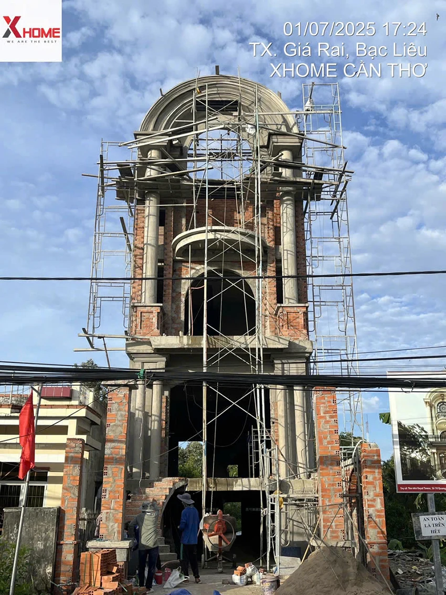
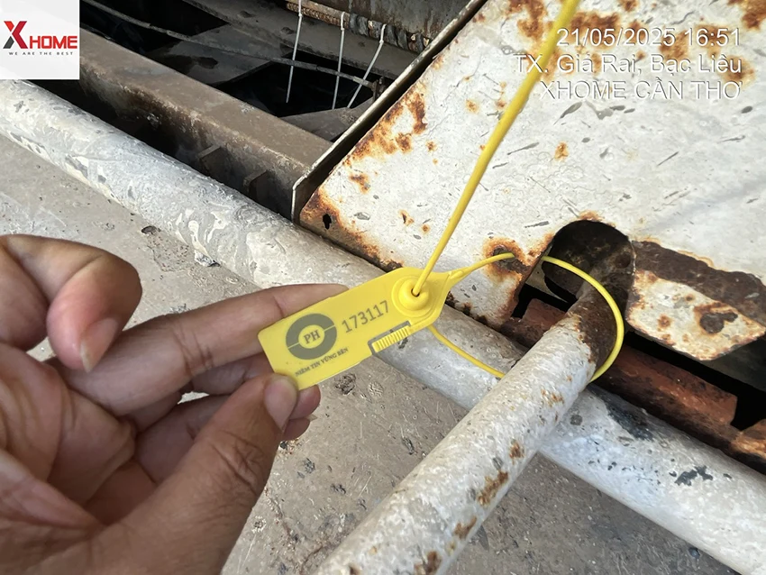
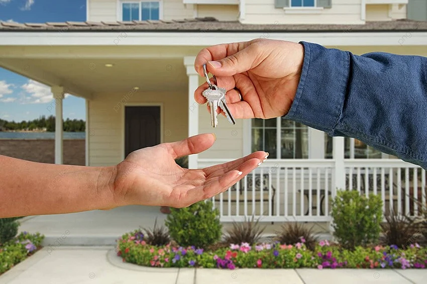

01Khảo sát hiện trạngBắt đầu bằng việc khảo sát thực tế vị trí khu đất trước khi triển khai thiết kế, giúp chúng tôi có được cái nhìn khách quan hơn về ngôi nhà trong tương lai, từ đó đưa ra những đề xuất thích hợp và hài hòa với nhịp sống địa phương.Chi tiết bước này DREAMESE / 01 ×BƯỚC 01Khảo sát hiện trạngBắt đầu bằng việc khảo sát thực tế vị trí khu đất trước khi triển khai thiết kế, giúp chúng tôi có được cái nhìn khách quan hơn về ngôi nhà trong tương lai, từ đó đưa ra những đề xuất thích hợp và hài hòa với nhịp sống địa phương.
02Tư vấn & định hướngĐây là giai đoạn đối thoại.Chi tiết bước này DREAMESE / 02 ×BƯỚC 02Tư vấn & định hướngĐây là giai đoạn đối thoại.Trước khi bắt tay vào Thực hiện thiết kế, việc lập Nhiệm vụ thiết kế và Định hướng moodboard bước đầu giúp cho quá trình thiết kế trở nên thuận lợi và không bị lạc đề.Ở Dreamese + MT Cons, chúng tôi cùng gia chủ sẽ cùng nhau đối thoại, trao đổi và cùng nhau đưa ra những định nghĩa chung về không gian sinh hoạt mà mong muốn hướng tới.
03Lên ý tưởng thiết kếHiện thực lời nói và giấc mơ bằng hình ảnh, màu sắc và vật liệu đồ họa.Chi tiết bước này DREAMESE / 03 ×BƯỚC 03Lên ý tưởng thiết kếHiện thực lời nói và giấc mơ bằng hình ảnh, màu sắc và vật liệu đồ họa.Trên cơ sở Nhiệm vụ thiết kế và Moodboard đã trao đổi trước đó, đội ngũ Dreamese sẽ bắt đầu thực hiện triển khai thiết kế giâc mơ của Khách hàng.Chúng tôi luôn tin rằng Thiết kế là giai đoạn dịch thuật những ước mong và kể lại câu chuyện cá nhân hóa của khách hàng bằng hình ảnh, công năng và vật liệu.Trong suốt quá trình này, chúng tôi luôn đề cao giá trị của những cuộc đối thoại và chia sẻ của Khách hàng, đó không những là động lực, mà còn là những gợi mở giúp chúng tôi không ngừng mở rộng tư duy và phát triển ý tưởng, cải tiến cá nhân hóa cuộc sống của khách hàng.
04Hồ sơ kỹ thuật thi côngĐây là giai đoạn tiền đề để công trình có thể hiện thực hóa được đúng như bản vẽ thiết kế 3D, đảm bảo vẻ đẹp được trường tồn theo thời gian, và ngân sách thi công được cân đối.Chi tiết bước này DREAMESE / 04 ×BƯỚC 04Hồ sơ kỹ thuật thi côngĐây là giai đoạn tiền đề để công trình có thể hiện thực hóa được đúng như bản vẽ thiết kế 3D, đảm bảo vẻ đẹp được trường tồn theo thời gian, và ngân sách thi công được cân đối.Ở Dreamese, Hồ sơ khai triển Kỹ thuật được trau chuốt theo tiêu chuẩn hóa của LOD, các chi tiết thiết kế đều được làm rõ và bốc tách rõ ràng để cả Khách hàng và Đơn vị thầu thi công đều có thể giám sát và kiểm soát.Chúng tôi không cho rằng mình là tốt nhất, nhưng nếu được đồng hành, chúng tôi mong rằng mình là người phù hợp nhất.
05Định vị & chỉ giớiĐảm bảo mọi thứ đúng pháp lý và đúng với tinh thần thiết kế ban đầu.Chi tiết bước này DREAMESE / 05 ×BƯỚC 05Định vị & chỉ giớiĐảm bảo mọi thứ đúng pháp lý và đúng với tinh thần thiết kế ban đầu.
06Thi côngTrước khi bắt đầu triển khai thi công, Dreamese có trách nhiệm thuyết minh về HSKT và Tiến độ thi công cho Khách hàng, để có thể sơ bộ biết trong thời gian sắp tới, các Quy trình, Giai đoạn và Nghiệm thu sẽ được thực hiện như thế nào.Chi tiết bước này DREAMESE / 06 ×BƯỚC 06Thi côngTrước khi bắt đầu triển khai thi công, Dreamese có trách nhiệm thuyết minh về HSKT và Tiến độ thi công cho Khách hàng, để có thể sơ bộ biết trong thời gian sắp tới, các Quy trình, Giai đoạn và Nghiệm thu sẽ được thực hiện như thế nào.Xuyên suốt quá trình thi công, đội ngũ Dreamese sẽ thường xuyên kiểm tra và có Kỹ sư luôn bám sát công trình, để tránh những lỗi không đáng có dù nhỏ nhất ngay từ đầu.Trên cơ sở khối lượng HĐTC đã thống nhất và ký kết, Dreamese sẽ luôn lắng nghe và cùng Khách hàng đồng hành hiện thực hóa kiến tạo không gian sống đáng mơ ước.
07Nghiệm thu & bàn giaoDreamese thật sự vinh hạnh khi được cùng quý khách hàng trải qua suốt khoảng thời gian chờ đợi, theo dõi, mong ngóng để kiến tạo nên ngôi nhà ước mơ.Chi tiết bước này DREAMESE / 07 ×BƯỚC 07Nghiệm thu & bàn giaoDreamese thật sự vinh hạnh khi được cùng quý khách hàng trải qua suốt khoảng thời gian chờ đợi, theo dõi, mong ngóng để kiến tạo nên ngôi nhà ước mơ.Bên cạnh việc Nghiệm thu và bàn giao cuối giai đoạn thi công, trong suốt quá trình thi công, Đội ngũ của Dreamese sẽ theo sát, và báo cáo, đảm bảo chất lượng công trình chuẩn chất lượng và đúng tiến độ.